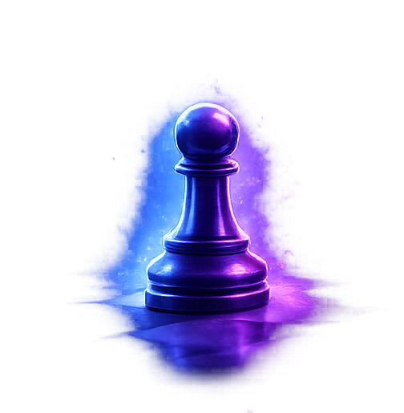

La base stratégique du jeu.

Le pion structure la position. Il détermine souvent la stratégie globale.
Il avance d’une case, deux lors de son premier mouvement. Il capture en diagonale.
Lorsqu’il atteint la dernière rangée, il peut être promu en reine, tour, fou ou cavalier.
Les pions passés sont extrêmement puissants. Une bonne structure de pions est essentielle pour gagner.